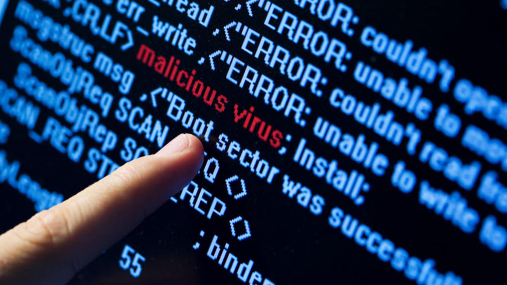

Les virus informatiques consitituent une des menaces les plus répandues en ligne. Contrairement à la croyance populaire, "malware" et "virus" ne sont pas des synonymes: le virus est seulement un type de malware. Il a la capacité de s'auto-répliquer après éxécution. Une fois sur une machine, il s'insère dans d'autres programmes et fichiers afin de se propager. Quand l'utilisateur lance un programme ou fichier infecté (nommé "hôte"), le programme du virus est éxécuté en premier, pouvant ainsi causer des dommages plus ou moins importants.
La plupart du temps, un virus vise à perturber le fonctionnement d'un système. Il s'y prend en endommageant voire supprimant les données d'un ordinateur, tout en se propageant le plus vite possible à d'autres machines (via mail par exemple). D'autres virus peuvent aussi viser à submerger un serveur de trafic afin de le ralentir ou le rendre inutilisable.
Il existe plusieurs types de virus, comme les ransomware, les chevaux de troie, les spyware...
Les virus qui causent le plus de dommage se forgent une triste réputation. Ceux derrière les attaques les plus importantes de l'histoire ont des noms souvent connus du public: ILOVEYOU, MyDoom, SQL Slammer...
Certains montent même au statut de véritable légende urbaine et impactent la culture Internet. Citons par exemple You Are An Idiot, un site web apparemment inoffensif paru en 2002. Il contenait en réalité un virus qui, une fois sur l'ordinateur, ouvrait de multiples fenêtres capables de se dupliquer, si bien que l'écran se trouvait vite saturé et la machine ralentissait considérablement. Ce malware n'était en réalité pas dangereux, mais son expansion fulgurante, les dégats involontaires et le mystère de son apparition marquèrent les esprits.
Un problème? Une question? Contactez-moi.